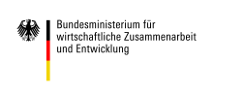

Deutschland wird nachhaltig
Die kürzlich von allen UN-Mitgliedsstaaten vereinbarten Ziele für nachhaltige Entwicklung sollen bis 2030 unter anderem die Armut abschaffen, bestehende Ungleichheiten in und unter den Ländern beseitigen, und den Klimawandel bekämpfen. Das Projekt 2030-Watch überwacht und visualisiert die Umsetzung dieser ambitionierten Ziele in Deutschland.
Deutschlands Umsetzung der Ziele für nachhaltige Entwicklung
- BMWI
- AA
- BMI
- BMJ
- BMF
- BMAS
- BMELV
- BMVG
- BMFSJF
- BMG
- BMVBS
- BMU
- BMBF
- BMZ
- BKAmt
- offizielle Indikatoren
- inoffizielle Indikatoren
vorhanden
Nachh'keit
Nachh'keit
Nachh'keit
Nachh'keit
Nachh'keit
In dieser Visualisierung repräsentiert jeder Punkt einen Indikator für das Erreichen der Entwicklungsziele durch Deutschland. Die Farben zeigen dabei an wie nachhaltig Deutschland aktuell im jeweiligen Indikator ist. Klicke auf eines der 17 Ziele und sieh alle Indikatoren zum ausgewählten Ziel. Unter Verantwortung siehst Du welches Ministerium für das Erreichen eines Zielindikators zuständig ist. Unter der Kategorie Typ kannst Du offizielle Indikatoren von unseren Vorschlägen unterscheiden - Probier’s mal aus!
Ländervergleich
Deutschland
Frankreich
Großbritannien
Diese Visualisierung ermöglicht Deutschlands Nachhaltigkeit mit anderen Ländern zu vergleichen, soweit Daten für Länder und Indikatoren verfügbar sind.
Einzelindikatoren
Hier wird ein genauer Ländervergleich für einzelne Zielindikatoren dargestellt. Die Werte sind in verschiedenen Einheiten und absoluten Zahlen dargestellt.
Über das Projekt
2030-Watch ist ein Projekt der Open Knowledge Foundation Deutschland mit dem Ziel die Umsetzung der Ziele für nachhaltige Entwicklung (Sustainable Development Goals, SDGs) in Deutschland übersichtlich darzustellen und nachzuhalten.
Alpha
Die SDGs sind ein überaus ambitioniertes und komplexes Vorhaben. Das Monitoring der SDG-Umsetzung ist daher auch eine Herausforderung, die aus unserer Sicht nur in einem kollaborativen Ansatz gemeistert werden kann. Hiermit verfolgen wir den in der Softwareentwicklung üblichen Ansatz, bei dem ein Produkt in einem frühzeitigen und unfertigen Entwicklungsstadium veröffentlicht wird, um durch Feedback eine graduelle und stetige Verbesserung zu ermöglichen. Unsere 2030-Watch-Projektes und unserer Webseite sind somit ein erster Entwurf, wie ein Monitoring der SDGs aussehen könnte. Wir verstehen unsere Webseite als eine Einladung an Expertinnen und Experten aus Zivilgesellschaft, Wissenschaft und Politik selber Vorschläge für geeignete, ambitionierte Indikatoren und deren Bewertung zu gestalten.
Kollaborative Entwicklung
Eine Grundannahme des 2030-Watch Projektes ist es, dass keine Organisation in der Lage ist, die Auswahl und Bewertung der Indikatoren alleine zu bewältigen. Das Monitoring der SDG-Umsetzung, wie auch die Umsetzung der SDGs selber, ist komplex und betrifft dermaßen verschiedene Fachbereiche, dass nur ein kollaboratives Vorgehen mit vielen unterschiedlichen Akteuren erfolgstragend sein kann. Daher strebt die Open Knowledge Foundation an, einen Trägerkreis von 2030-Watch einzurichten, der Organisationen aus verschiedenen Schwerpunktsbereichen, wie zum Beispiel Umwelt oder Menschenrechte, mit einschließt. Darüber hinaus arbeiten wir mit zahlreichen weiteren Organisationen zu einzelnen Themen zusammen. Im Oktober 2015 haben wir bereits mit dem Global Policy Forum und mit Terre des Hommes eine enge Kooperation zu 2030-Watch beschlossen.
BUNO Maxime
Im Rahmen des Post-2015-Konsultationsprozesses und der Verabschiedung der 2030-Agenda wurde vom UN Generalsekretär, von Expertengremien und von hochrangigen Vertretern multilateraler Organisationen, und einzelner Staaten immer wieder die Formulierung gewählt “Business as usual is no option.” Aus unserer Sicht ist es essentiell für die Umsetzung der SDGs, dass diese Maxime nicht aus dem Blickfeld gerät. Aus diesem Grund integrieren wir es explizit in unser Konzept und nennen es die BUNO Maxime. In 2030-Watch soll diese Maxime vor allem bei der Festlegung der Zielwerte für einzelne Indikatoren zum Tragen kommen. Für die SDG-Umsetzung insgesamt sollte die BUNO Maxime aber auch Entscheidungen zu Umsetzungsprozessen und zur Bereitstellung finanzieller Mittel prägen.
Zeitrahmen der Daten
2030-Watch dient dem Zweck die Umsetzung der SDGs bis 2030 zu verfolgen. Dazu werden fortlaufend möglichst aktuelle Daten benötigt. Bisher ist die Datenverfügbarkeit für die SDG-Ziele insgesamt noch unzureichend. In Teilbereichen liegen keine Daten vor, oder nur alte Daten. In der aktuellen Version der Webseite wurden Datensätze ab 2011 verwendet. Ältere Datensätze wurden nicht berücksichtigt. Die Mehrzahl der Datensätze stammt aus 2013 und 2012.
Indikatorauswahl
Die Indikatoren werden auf unterschiedliche Art und Weise ausgewählt:
Offizielle Indikatoren
Unser Monitoringprojekt soll so weit wie möglich an die offiziellen Indikatoren angelehnt sein. Daher haben wir in einem ersten Schritt die Vorschläge des Sustainable Development Solutions Network und der UN-Statistikbehörde gesichtet, um geeignete Indikatoren für Deutschland zu identifizieren. Im Laufe der kommenden Monate sollen die von der UN beschlossenen und die im deutschen Umsetzungsplan berücksichtigten Indikatoren ebenfalls auf eine mögliche Einbeziehung geprüft werden.
Eigene Indikatorvorschläge
Es ist ein zentrales Interesse von 2030-Watch, dass Deutschland seiner nationalen und internationalen Verantwortung gerecht wird und vor allem in den Bereichen Fortschritte erzielt, in denen aus unserer Sicht der größte Handlungsbedarf besteht. Die Einschätzung, ob zu einem SDG-Unterziel besonderer Handlungsbedarf besteht oder nicht, ist natürlich eine politische Bewertung. Zu diesen Politikfeldern schlagen wir auch Indikatoren vor, die voraussichtlich nicht Teil der offiziellen deutschen oder internationalen Indikatoren sind.
Abdeckung aller SDGs
Grundsätzlich soll 2030-Watch alle Ziele abdecken, die für Deutschland sowie andere OECD- und EU-Länder relevant sind. Zum bisherigen Zeitpunkt fehlt 2030-Watch die Möglichkeit der Darstellung von Indikatoren, die besonders schwierig zu operationalisieren sind, beziehungsweise für die keine Daten vorliegen. Das ist zum Beispiel das Unterziel 17.10 zu fairer Handelspolitik oder das Unterziel 12.8 zu Transparenz von Produkten im Hinblick auf Nachhaltigkeit. Ziel der Open Knowledge Foundation ist es, diese Lücken mittelfristig durch weitere Recherche und durch Kollaboration mit anderen Akteuren zu schließen. Ein Ansatz dafür ist das Konzept der Datenpatenschaften. Datenpaten sind Organisationen, die auf einen Themenbereich spezialisiert sind, internationale Netzwerke zu einem Spezialthema haben und gegebenenfalls auch eigene Daten zu ihrem Thema sammeln. Wir streben an ab 2016 Datenpaten zu gewinnen, die uns bei der Operationalisierung einzelner Indikatoren und bei der Sammlung von Daten über ihre eigenen Netzwerke unterstützen. Im Gegenzug bietet die Open Knowledge Foundation eine prominente Sichtbarkeit auf 2030-Watch sowie die Visualisierung der Daten für ihre eigene Nutzung an.
Europa
Einige der Politikbereiche, die von den SDGs betroffen sind, liegen in erster Linie in der Verantwortung der EU und nicht in der Verantwortung der Bundesregierung. Dazu zählt vor allem die Handelspolitik, aber eingeschränkt auch andere Bereiche wie die Migrationspolitik. Grundsätzlich strebt 2030-Watch an, auch diese Bereich mit einer geteilten Verantwortung mit Indikatoren abzubilden. Allerdings sind grade die SDG-Ziele zur Handels- und Migrationspolitik sehr schwer operationalisierbar. Die Open Knowledge Foundation sieht vor, mittelfristig Indikatoren für diesen Bereich vorzuschlagen. Dabei werden wir SDG-Indikatoren berücksichtigen, die eventuell von der EU-Kommission selber für ihre Verantwortungsbereiche entwickelt werden.
Indikatoren für Deutschland
Ziel von 2030-Watch ist es von der Bundesregierung Rechenschaft für ihre Verantwortungsübernahme bei globalen Herausfoderungen wie Nachhaltigkeit, Armutsbekämpfung, Zukunftssicherung und Gerechtigkeit einzufordern. Dieses Ziel spiegelt sich in der Indikatorenauswahl wieder. So ist aus unserer Sicht die Anzahl der Todesfälle in Folge einer Malariaerkrankung kein geeigneter Indikator für Deutschland, die Transparenz des Finanzmarktes ist dagegen ein passender nationaler Indikator.
Datenverfügbarkeit
Für viele der SDG-Unterziele ist die Auswahl an potentiellen Indikatoren sehr begrenzt. Zudem ist unsere Indikatorauswahl durch den Mangel an geeigneten Daten stark eingeschränkt. Daher beschränken wir uns bisher auf Indikatoren, für die Daten verfügbar sind. In Zukunft möchten wir Indikatoren aufnehmen, für die Daten mittelfristig gesammelt werden können, beispielsweise durch Expertenbefragungen.
Die Bewertung der Indikatoren
Die größte Herausforderung bei der Bewertung der SDG-Umsetzung besteht darin, für einzelne Indikatoren Zielmarken festzulegen. Solch eine Festlegung bestimmt, ob der aktuelle Fortschritt Deutschlands bei der Umsetzung der SDGs sehr gut, gut oder schlecht, oder sehr schlecht ist. Generell gibt es zwei Optionen für die Bewertung der Indikatoren, eine relative Bewertung Deutschlands im Verhältnis zu anderen Ländern oder eine absolute Bewertung gemessen an einem festen Zielwert.
Absolute Bewertung
Nur wenige SDG-Ziele wie das Unterziel 3.1. zur Müttersterblichkeit beinhalten einen konkreten, objektiv messbaren Zielwert (70 Todesfälle bei 100.000 Lebendgeburten in diesem Fall). In einigen Fällen kann man aus aktuellen oder früheren Verpflichtungen der Bundesregierung einen Zielwert ableiten. Dies ist der Fall bei finanziellen Höhe der deutschen Entwicklungszusammenarbeit. Deutschland hat sich in der Vergangenheit immer wieder dazu verpflichtet 0,7% des Bruttoinlandsproduktes als Entwicklungshilfe bereitzustellen. Bei den meisten SDG-Zielen gibt es gegenwärtig jedoch keine objektiven Zielwerte. Beispielsweise für das Unterziel 8.2. zur Erhöhung wirtschaftlicher Produktivität ist die Rohstoffproduktivität ein sinnvoller Indikator. Die höchsten Werte an Rohstoffproduktivität in Europa erzielen die Niederlande und Luxembourg mit etwa 4 Euro pro Kilo verbrauchten Rohstoffen. Aus unserer Sicht ist es klar, dass beide Länder ihre Rohstoffproduktivität noch wesentlich erhöhen müssen, um nachhaltig zu sein. Aber ob die Rohstoffproduktivität bei 10 Euro pro Kilo oder bei 50 Euro pro Kilo sein sollte, damit wir die SDGs insgesamt erreichen können, werden auch Experten nicht ohne Kontroverse festlegen können.
Relative Bewertung
Eine relative Bewertung erscheint auf den ersten Blick sinnvoller, da man von allen Ländern erwarten sollte, mindestens das Niveau des “best performers” zu erreichen. Die relative Bewertung hat jedoch zwei wesentliche Schwächen: Zum einen kann sich die Bewertung eines Indikators wie die Rohstoffproduktivität verbessern, ohne dass sich die Rohstoffproduktivität selber verbessert. Wenn sich die Rohstoffproduktivität des “best performers” verschlechtert, wird die Bewertung aller anderen Länder automatisch verbessert. Die zweite große Schwäche einer relativen Bewertung ist, dass im Rahmen der 2030-Agenda immer wieder betont wird, dass “business as usual” keine Option ist. Alle Länder müssen sich bei fast allen Indikatoren deutlich verbessern - häufig sogar um ein Vielfaches, damit Armut abgeschafft wird und damit ein Leben in Würde für alle Menschen und für die zukünftigen Generationen innerhalb der planetaren Grenzen möglich ist. Eine relative Bewertung, bei der der “best performer” heute schon eine sehr gute Bewertung erhält, sendet aus dieser Perspektive ein völlig falsches Signal. Eine mögliche "rule of thumb" für uns könnte sein, der best performer muss seine Leistung mindestens verdoppeln.
Auf Grund der oben ausgeführten Überlegungen ist aus unserer Sicht mittelfristig die Festlegung eines absoluten ambitionierten Optimalwertes unerlässlich. Auf Basis unserer bisherigen Diskussionen mit Experten schlagen wir daher in der aktuellen Version von 2030-Watch Optimalwerte vor, um eine Diskussion um diese Optimalwerte anzuregen. Ziel der Open Knowledge Foundation ist es, die Diskussion über die Optimalwerte noch bis zum 3 Quartal 2016 fortzuführen und dann im vierten Quartal 2016 endgültige Optimalwerte festzulegen, inklusive zeitliche Zwischenziele.
Zeitstufen der Bewertung
Die SDGs sollen bis 2030 erreicht sein. Die Bewertung der Indikatoren sollten diesen zeitlichen Horizont berücksichtigen und Zwischenziele festlegen. Die Open Knowledge Foundation schlägt vor, dass diese Zwischenziele für Zeiträume von drei oder höchstens vier Jahren festgelegt werden sollten. In drei oder vier Jahren können Politikentscheidungen Wirkungen entfalten.
Gewichtung unterschiedlicher Indikatoren
In dem aktuellen Konzept von 2030-Watch werden alle Indikatoren gleich gewertet. Diese Herangehensweise kann kritisiert werden. So ist es beispielsweise wenig intuitiv, dass die Suizidraten in Deutschland das gleiche Gewicht für die globale Nachhaltigkeit, die Armutsbekämpfung und die Gerechtigkeit haben soll, wie die Höhe der deutschen Subventionen von fossilen Brennstoffen, die das globale Klima bedrohen. Andererseits gibt es unseres Wissens bisher keine glaubwürdigen wissenschaftlichen Ansätze, die eine Gewichtung der Indikatoren auf der Basis von objektiven Fakten erlauben würde. Wir versuchen das Problem der Gewichtung so zu entschärfen, dass wir verschiedene Filter für die Indikatoren anbieten. So ist es möglich nur die Indikatoren zu betrachten, die für das SDG-Ziel 13 - Bekämpfung des Klimawandels oder nur für das Ziel 3 - Gesundheit.
Filter
2030-Watch insgesamt soll den Nutzerinnen und Nutzern einen Überblick über die SDGs und den Stand ihrer Umsetzung bieten. Gleichzeitig soll die Website aber ermöglichen, die Details zu den vielen SDG-Unterzielen und den damit verbundenen Indikatoren zu sehen und die Frage der Umsetzung aus verschiedenen Perspektiven zu betrachten. Zu diesem Zweck bietet 2030-Watch eine Reihe von Filtern an., um die Fortschritte der Bundesregierung bei der Umsetzung der SDGs von verschiedenen Perspektiven zu betrachten.
SDG 1-17
Der erste Filter ist die Sortierung nach den 17 festgelegten Hauptzielen der SDG.
Zuständigkeiten
Die SDGs sind eine Verpflichtung der gesamten Bundesregierung und ihre Umsetzung erfordert die Zusammenarbeit aller Ministerien in der Exekutive und aller parlamentarischen Ausschüsse in der Legislative. Dennoch gibt es für die meisten Indikatoren Ministerien und parlamentarische Ausschüsse, die eine besondere Verantwortung haben und die die Umsetzung der betreffenden SDG-Unterziele vorantreiben müssen. Daher haben wir auch einen Filter für die ministerielle und parlamentarische Zuständigkeit.
Nationale/Internationale Revelanz
Nicht alle SDG-Unterziele haben den gleichen Wirkungskreis. Der Alkoholkonsum pro Kopf zum Beispiel hat lediglich Auswirkungen auf nationaler Ebene. Die Senkung des Alkoholkonsums in Deutschland ist für die nachhaltige Entwicklung in anderen Ländern irrelevant. Veränderungen der Klimaemissionen pro Kopf, des Energieverbrauchs und der Investition in Forschung und Entwicklung hingegen können große Auswirkungen sowohl bei uns, als auch in anderen Ländern haben. Die Höhe der offiziellen Entwicklungszusammenarbeit (EZ), die Wirksamkeit der EZ oder der Export von Waffen an nicht-demokratische Staaten hat kaum Auswirkungen in Deutschland, aber große Auswirkungen in anderen Ländern. Diese Unterschiede wollen wir durch einen Filter sichtbar machen.
Offizielle Indikatoren/OKF Indikatoren
Die Indikatoren, die auf internationaler Ebene, im Rahmen der EU oder in Deutschland festgelegt werden, drücken aus, woran die Bundesregierung und die internationale Gemeinschaft die Fortschritte in Deutschland bei der SDG-Umsetzung messen wird. In 2030-Watch wollen wir uns jedoch nicht notwendigerweise auf diese Indikatoren beschränken. Statt dessen wollen wir zusätzliche Indikatoren vorschlagen, die aus unserer Sicht und aus der Sicht unserer Kooperationspartner notwendig sind, um die hohe Ambition der 2030-Agenda in ambitionierte Indikatoren zu übersetzen. Dort, wo wir Lücken in den offiziellen Indikatoren sehen, werden wir eigene Indikatoren vorschlagen. Diese zusätzlichen Indikatoren sind teilweise von anderen Institutionen übernommen. Durch einen Filtern wollen wir Nutzerinnen und Nutzern erlauben, zwischen den offiziellen Indikatoren und den von uns vorgeschlagenen Indikatoren der Open Knowledge Foundation zu unterscheiden.
Aggregation der Daten
2030-Watch ist kein Index. Es ist nicht das Ziel unserer Arbeit, die Werte für einzelne Indikatoren zu aggregieren, um einen Endwert zu erhalten.
Globale Ziele
Die Nachhaltigen Entwicklungsziele - Sustainable Development Goals, SDGs - sind am 27. September 2015 von der UN Generalversammlung verabschiedet worden. Alle UN Mitgliedsorganisationen haben sich verpflichtet, diese Ziele bis 2030 auf nationaler und globaler Ebene zu erreichen. Die Erarbeitung dieser Ziele fand in einem breiten internationalen Konsultationsprozess statt, bei dem nicht nur Regierungen und multilaterale Organisationen, sondern auch viele zivilgesellschaftliche Akteure und Vertreter aus Wissenschaft und Wirtschaft beteiligt waren.
Das Neue an den SDGs
Im Gegensatz zu den Millenniumentwicklungszielen, die im Jahr 2000 verabschiedet wurden, streben die SDGs nicht nur Veränderungen in den sogenannten Entwicklungsländern an, sondern beziehen sich auch auf Länder wie Deutschland, Frankreich oder die USA. Im Gegensatz anderen internationalen Vereinbarungen aus der Vergangenheit betreffen die SDGs nicht nur das Bundesministerium für wirtschaftliche Zusammenarbeit und Entwicklung oder nur das Umweltministerium, sondern die gesamte Bundesregierung. Damit stellen die SDGs eine Chance dar, die nationale und globale Verantwortung der Bundesregierung für nachhaltige Entwicklung, Armutsbekämpfung, Zukunftssicherung und Gerechtigkeit in einen gemeinsamen Rahmen zu stellen.
Definition von Indikatoren
Um die SDGs zu verwirklichen ist es zentral, dass ihre Umsetzung regelmäßig gemessen wird und dass die nationalen und internationalen Akteure Rechenschaft über ihre Fortschritte bei der Zielerreichung ablegen. Solch eine Rechenschaftslegung ist nur mit quantitativen Indikatoren möglich. Die Definition dieser Indikatoren bestimmt das Ambitionsniveau der Umsetzung. Daher ist die Definition auch sehr politisch und Gegenstand intensiver Diskussionen. Die Festlegung der Indikatoren wird dadurch erschwert, dass für viele Themen keine Daten bereitstehen, die detailliert, aktuell und für alle Länder verfügbar sind.
Teilweise sind die SDG Unterziele sehr präzise. Beispielsweise bei Ziel 3.1. “Reduktion der weltweiten Müttersterblichkeit auf weniger als 70 pro 100.000 Geburten” ist klar, woran die Zielerreichung zu messen ist und wann ein Ziel als erreicht gelten kann.
Andere Ziele sind präzise im Hinblick darauf, was gemessen werden soll, aber vague im Bezug auf einen Zielwert. So ist bei Ziel 8.6. “Signifikante Reduktion der Jugendlichen, die weder in Arbeit noch in Ausbildung sind” unklar, was unter einer signifikanten Reduktion zu verstehen ist. Einige Unterziele sind so vague formuliert, dass eine Operationalisierung sehr schwierig ist. Beispielsweise fordert das Ziel 10.7. “Geordnete, sichere, regelmäßige und verantwortungsvolle Migration und Mobilität”. Was genau “geordnet”, “sicher”, “regelmäßig” und “verantwortungsvoll” bedeutet, wird von verschiedenen Akteuren unterschiedlich interpretiert und bewertet. Die Definition von Indikatoren wird daher zwangsweise eine subjektive Interpretation der Unterziele widerspiegeln.
Eine Operationalisierung ist um so schwieriger, je umfassender die Unterziele sind. So fordert das Ziel 17.10. “Die Förderung eines universellen, regel-basierten, offenen, nicht-diskriminierenden, gerechten multilateralen Handelssystems”. Insbesondere bei den sehr vaguen und politisch sehr anspruchsvollen Zielen besteht die Gefahr, dass die offiziellen Indikatoren nicht dem von der 2030-Agenda geforderten Ambitionsniveau entsprechen.
Offizielle Indikatorenzuständigkeiten
Bereits vor der Verabschiedung der SDGs durch die UN haben verschiedene Akteure Vorschläge entwickelt, an welchen Indikatoren die 169 Unterziele gemessen werden sollen. So haben vor allem das Sustainable Development Solutions Network (SDSN) und die UN Statistikbehörde UNStats im Laufe des Jahres 2015 umfangreiche Indikatorvorschläge vorgelegt. Im März 2015 wurde die Inter-agency and Expert Group on SDG Indicators gegründet (IAEG-SDGs) , also eine Expertengruppe zu SDG Indikatoren unter der Leitung der UN-Statistikbehörde. Die IAEG-SDGs hat das Mandat bis zur Sitzung der UN Statistik Kommission im März 2016 eine offizielle Liste von SDG Indikatoren zu entwickeln und die Anwendung dieser Indikatoren zu unterstützen.
Der nationale Umsetzungsplan
Auf nationaler Ebene hat die Bundesregierung einen nationalen Konsultationsprozess vorgesehen, um einen Umsetzungsplan für die SDGs zu entwickeln. Nach bisherigem Informationsstand wird die Umsetzung der SDGs in einer aktualisierten Form der deutschen Nachhaltigkeitsstrategie verankert. Die neue Nachhaltigkeitsstrategie soll im dritten Quartal 2016 vorliegen.
Bisher ist weder auf internationaler Ebene noch auf nationaler Ebene klar, inwiefern zivilgesellschaftliche Organisationen am offiziellen Monitoring der SDG Umsetzung beteiligt sein werden. Vor diesem Hintergrund der Ziele, die teilweise sehr vague formuliert sind und der Unklarheit darüber, ob und wie Zivilgesellschaft an dem Monitoring der SDGs beteiligt sein werden, hat die Open Knowledge Foundation das 2030-Watch Projekt ins Leben gerufen, um eine Rechenschaftslegung der Bundesregierung auf hohem Ambitionsniveau zu fördern.
Die Open Knowledge Foundation Deutschland (OKF) ist ein Verein, der sich für offene Daten, Transparenz, Bürgerbeteiligung und Wissen als Gemeingut in der modernen Informationsgesellschaftim einsetzt. Zu unseren Projekten zählen Frag den Staat für Bürgeranfragen nach dem Informationsfreiheitsgesetz, Codefor.de zur Förderung von digitalem Engagement in 22 deutschen Kommunen, Politik-bei-uns für Transparenz von Ratsinformationssystemen auf kommunaler Ebene und Digiwhist, ein EU-weites Projekt für Transparenz bei öffentlicher Auftragsvergabe. Weitere Projekte sind die Förderung von Civic Tech unter Kindern und Jugendlichen durch das Projekt Jugend hackt, die Förderung der Nutzung digitaler Kulturdaten durch Coding da Vinci oder die Visualisierung des Bundeshaushalts. Neben diesen größeren Projekten führen wir zum Beispiel Hackdays zu Energiedaten oder Transportdaten durch, wir bieten Datentrainings an und unterstützen Städte und Kommunen bei der Einrichtung von Datenportalen. Neben unseren eigenen Projekten betreibt die OKF politische Arbeit für offene Daten und Transparenz in Deutschland durch Öffentlichkeitsarbeit, durch Mitwirkung auf Veranstaltungen oder durch Expertenbeiträge im Bundestag. Schließlich arbeiten wir bundesweit mit einem Netzwerk von Open Data Aktivisten zusammen und unterstützen lokale Projekte. Die OKF ist das deutsche Chapter des internationalen Open Knowledge Netzwerks mit Chaptern und lokalen Gruppen in zahlreichen Ländern weltweit sowie mit 19 themenspezifischen internationalen Arbeitsgruppen.
Die OKF hat gegenwärtig 21 MitarbeiterInnen. Die meisten davon arbeiten Teilzeit, engagieren sich darüber hinaus aber auch ehrenamtlich in zahlreichen Projekten zu Civic Tech und Transparenz. Außerdem hat die OKF 9 ehrenamtliche Vorstandsmitglieder, die teilweise sehr aktiv in Projekte eingebunden sind. Das Büro der OKF ist in der Berliner Singerstrasse 109, allerdings sind wir dezentral organisiert, so dass einige Teammitglieder auch in anderen Teilen Deutschlands leben. Mehr Informationen zum Team findet Ihr hier.
Die OKF ist kein klassischer Mitgliederverein. Um klein und agil zu bleiben werben wir keine neuen Mitglieder an und verfügen somit auch nicht über eigenes Einkommen durch Mitgliederbeiträge. Die Arbeit der OKF wird fast ausschließlich durch Einzelprojekte finanziert. Geldgeber sind vor allem die EU, staatliche Geber auf nationaler, Bundesland- und kommunaler Ebene, Stiftungen, Nichtregierungsorganisationen sowie private Spender. Eine genaue Aufstellung unserer Finanzen findet Ihr hier.
Kontakt / Impressum
in Kooperation mit

unsere Finanzpartner



Vereinsadresse
Open Knowledge Foundation Deutschland e.V.Singerstr. 109, 10179 Berlin, Deutschland
Vereinsregister Nr: VR 30468 B
Steuernummer: 27/674/52428
VAT: DE278022128
Kontakt:
2030-Watch@okfn.de
+49 30 57703666-0
Fax: +49 30 57703666-9